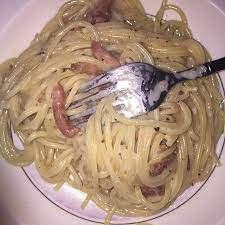

Pasta


Description
You've mustered the courage to keep on living until 12pm. Congratulation! You must be famished! Here you'll learn how to make pasta! It is a very popular dish among people with <value=depression> for it is easy to make, doesn't require a lot of supervision, and allows you to contemplate the inevitable march of increasing anthropy!
It is perfectly okay to feel some trepidation, but not to worry! The <value=delicious> pasta displayed in the photo above is a mere approximation of the finished product. Remember: Finished! Not Perfect!
Ingredients
- 2 cups of any kind of pasta or about enough spaghetti to hold between your thumb and index;
- 1.5 liters of water in a pot;
- 1/2 tbsp. of salt;
- Any kind of sauce, fell free make your own if your SSRIs have started kicking in, otherwise it can range from Pesto if you're feeling good, all the way down to Ketchup if you're truely desperate. Mayonnaise is to be used only if you wish to go to hell;
Steps
- Bring the pot of water to a boil;
- Put pasta in the pot, let soften, swirl regularily during boiling process;
- Taste the pasta, you'll know when it's ready!
- Drain pasta, serve in a plate with your sauce;
- Eat to your heart's content!